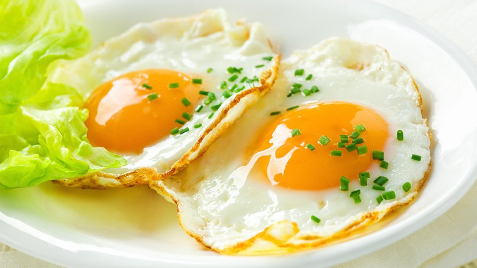

Jajca na oko
Home

Opis:
Si predstavljate mirno nedeljsko jutro,
ko se vam ne ljubi dolgo časa pripravljati zajtrka?
Pečena jajčka na oko so za taka jutra izvrstna izbira!
SESTAVINE:
- 2 žlički masla
- 2 jajci
- 1 ščepec soli
- 1 ščepec mletega popra
Priprava:
-
Na kuhalnik pristavimo ponev,
v kateri na srednji temperaturi stopimo maslo.
Ko je maslo stopljeno, v ponev previdno ubijemo jajci
in ju na nizki temperaturi pečemo približno 5 minut.
-
Ko se beljak dobro zapeče in na robovih rahlo porjavi,
jajci preložimo na krožnik in ju rahlo posolimo in popopramo.
Postrežemo skupaj s kruhom.